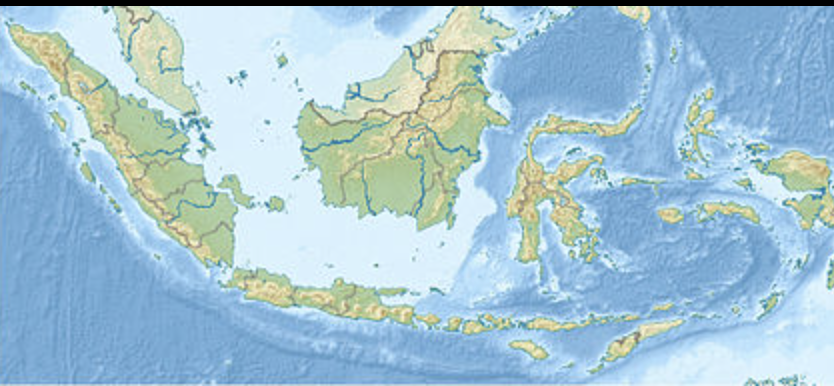

About Me
My birthname is Eagan Alexander. I was born in Indonesia, where I spent most of my childhood days there. I dont particularly liked anything, I am probably similar to anyone who is reading this. The paragraph below is about my country

The Southeast Asian country of Indonesia consists of more than 17,000 tropical and volcanic islands that straddle the equator between the Indian and Pacific oceans. Among Indonesia’s principal regions are the islands of Java, Bali, and Sumatra, as well as large parts of Borneo and New Guinea (a contested region). Today, Indonesia is home to more than three hundred ethnic groups with approximately five hundred spoken languages and dialects. Eighty-seven percent of the population, or some 200 million people, is Islamic, making Indonesia the largest Muslim nation in the world.
For thousands of years Indonesians developed complex agricultural societies with rich artistic and cultural traditions rooted in a belief in ancestral spirits and animism. The history of Indonesia also chronicles the influx of maritime trade, the transmission of religions, the rise and fall of Buddhist and Hindu kingdoms, 350 years of colonization by the Dutch, invasion by the Japanese, and the establishment of an independent nation in 1945. The Indonesian people have nurtured a world view that incorporates diverse religions and traditions with indigenous beliefs that lie at the heart of Indonesia’s cultures.
The story of how these diverse religions coexist with and support the indigenous beliefs of Indonesia is told in the arts and architecture of the islands. The Southeast Asian tradition of rulers claiming close association with divine beings extended to Indonesian kings who patronized Hinduism and Mahayana Buddhism. To honor the ancestors and to legitimize their rule, these kings built monumental structures to adorn the island of Java. The most famous are the Buddhist monument of Borobudur and the Hindu temple complex at Prambanan. In the late 1200s the Javanese kingdom of Majapahit emerged, during which time both Buddhism and Hinduism were practiced in the royal courts. However, the spread of Islam centuries later had an even more lasting influence on the people of Indonesia. Originally brought to the islands by Arab, Chinese, and Indian traders, Sufism (a mystical branch of Islam) was practiced in royal courts. In the 1500s the Sultan of Demak, originally a Hindu king, converted to Islam and conquered Majapahit, furthering the spread of that religion throughout the island.